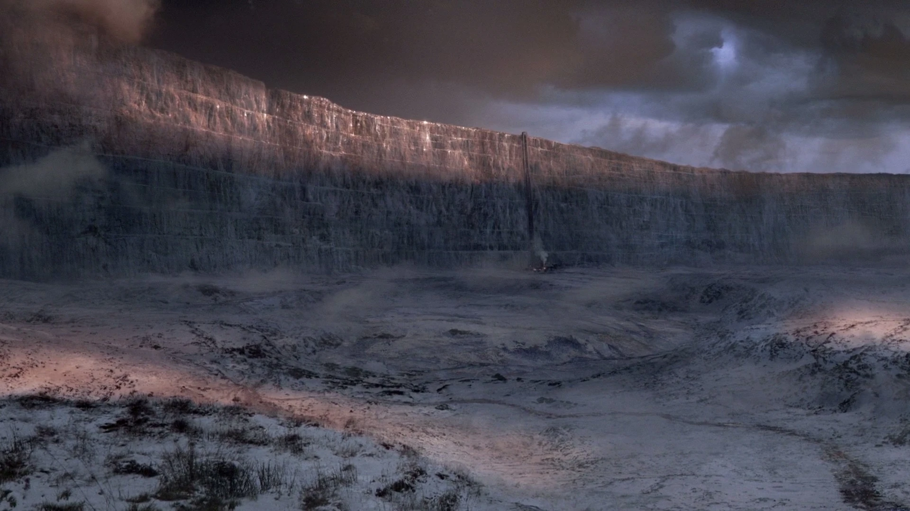
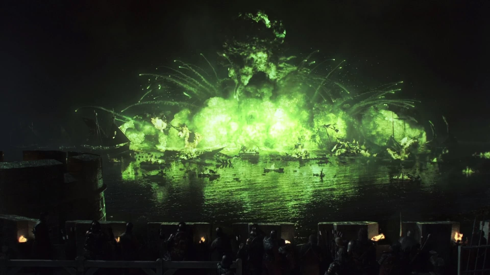
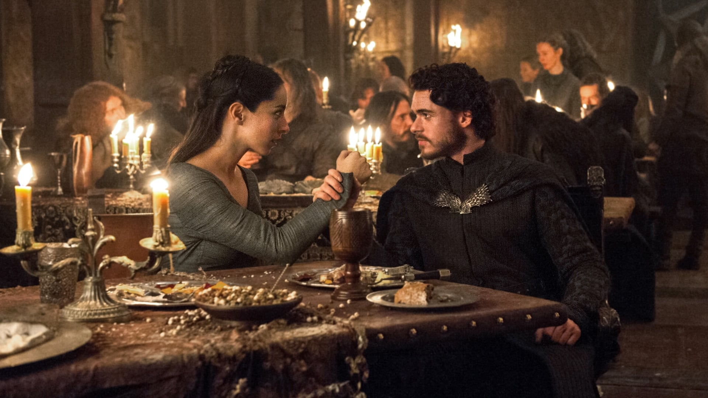
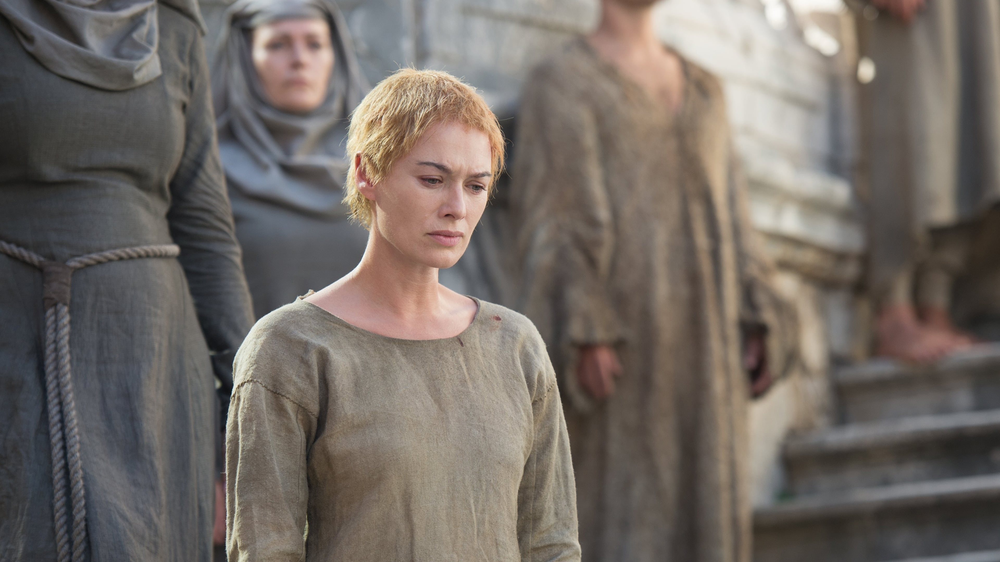
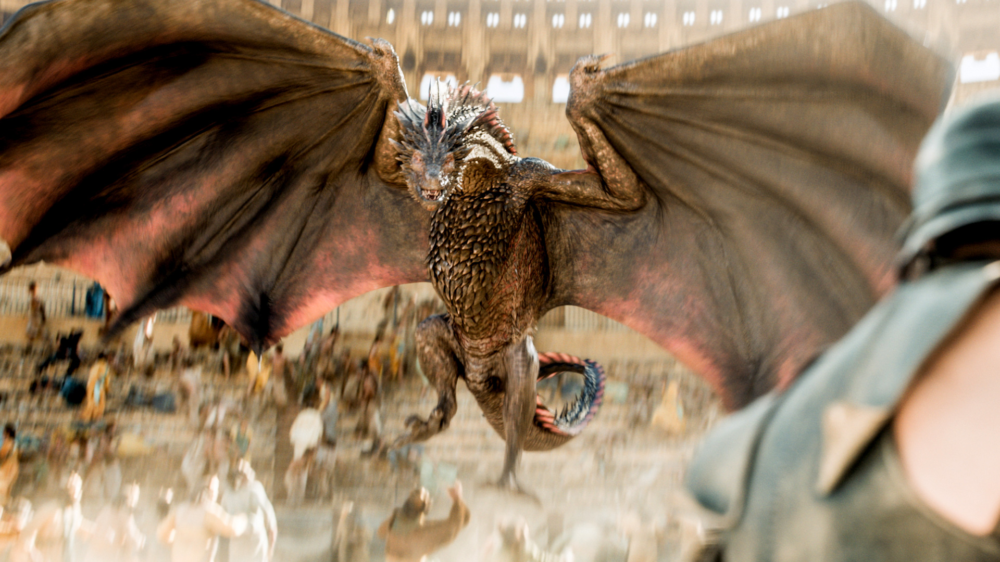
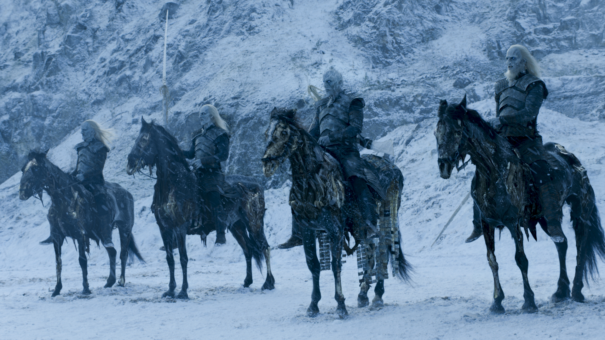

-

A Guerra dos Tronos
1996No primeiro livro, o poder político e as traições começam a desenrolar o destino dos Sete Reinos. No Norte, o inverno se aproxima, enquanto no Sul, famílias nobres lutam pelo Trono de Ferro. O início de uma batalha épica por poder, honra e sobrevivência.
-

A Fúria dos Reis
1998Com a morte do rei, os reinos mergulham em guerra civil. Vários pretendentes ao trono surgem, cada um reivindicando sua legitimidade. Enquanto as batalhas devastam Westeros, forças antigas e misteriosas começam a se mover além da Muralha, prenunciando uma ameaça muito maior.
-

A Tormenta das Espadas
2000O terceiro livro marca o clímax da guerra dos tronos. Alianças são formadas e desfeitas em meio a batalhas devastadoras, enquanto traições chocantes redefinem o destino de grandes famílias. O Casamento Vermelho, um dos momentos mais brutais e inesquecíveis da saga, ocorre nesta fase da guerra.
-

O Festim dos Corvos
2005Com muitos dos grandes líderes mortos, o quarto livro foca nos efeitos da guerra sobre os sobreviventes. Westeros está quebrado e vulnerável, com seu povo devastado pela fome e pelo luto, enquanto novos desafios e ambições emergem, moldando o futuro do reino.
-

A Dança dos Dragões
2011Enquanto Daenerys Targaryen luta para manter o controle sobre seus dragões e a cidade de Meereen, forças no Norte se preparam para uma guerra decisiva. Jon Snow enfrenta desafios imensos na Patrulha da Noite, enquanto o inverno finalmente começa a se instalar, trazendo caos, morte e escuridão ao continente.
-

Os Ventos do Inverno
Livro FuturoNo sexto livro, o inverno atinge Westeros com força total. As forças do Norte enfrentam os mortos-vivos, enquanto no Sul, a guerra pelo Trono de Ferro continua. Jon Snow enfrenta decisões impossíveis, Daenerys lida com o caos em Meereen, e o futuro de Westeros nunca esteve tão incerto. O frio e a escuridão ameaçam engolir tudo.
-

Um Sonho de Primavera
Livro FuturoNo último livro, Westeros tenta se reerguer após o inverno e a guerra. Os sobreviventes lutam para reconstruir o reino, mas as cicatrizes do passado são profundas. A guerra pelo Trono de Ferro está chegando ao fim, e o destino dos Sete Reinos será finalmente decidido, trazendo esperança ou mais destruição.